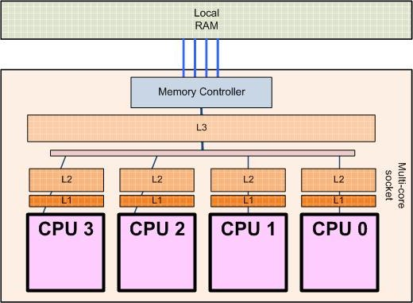
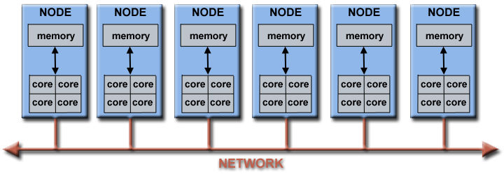

Cluster computing¶
Performance of geodynamic models¶

Memory hierarchy of modern PC (https://allthingsvlsi.wordpress.com)
Let’s consider a typical 2D thermomechanical geodynamic model:
Dimensions: 1000 km x 1000 km
Resolution: 1 km
Grid points: 1 000 000
Maximum time step (diffusion limit): 16 kyrs
Four unknowns: \(v_x\), \(v_y\), \(P\), \(T\)
Four equations per grid point
Discretized versions of the equations:
About 20 operations (+ - * /) per equation
Operations per step: 80 000 000
Modern PC processors can do about 10-100 GFLOPS (1 GFLOP = \(10^9\) floating-point operations per second)
The processor could do 1000 steps per second
For example, 50 Myrs / 16 kyrs per step = 3200 steps
Model run time: 3.2 secs
BUT: Memory access time (random): approx. 50 ns
Each operation needs to fetch at least one number from memory
Worst case: Random location:
\(80\times10^6\times50\times10^{-9}~s=4.0~s\) per step
Total runtime (“wall clock time”): \(\approx 4~\mathrm{s/step}\times3200~\mathrm{steps}=3.5~\mathrm{hours}\)
Also, a lot of other “book keeping” during the model calculations
Exercise - How heavy is a 3D model?¶
Make a similar runtime estimation for a 3D model with same resolution
Improving model performance¶
The cure: Split the job onto multiple processors.
Each will have fewer operations to do
Partitioning of the job:
Each processor will handle its own grid points, or
Each processor will handle its own part in solving the coefficient matrix
Each will have a smaller memory region to worry about (can store numbers closer to the processing unit)
Modern computer architecture¶

Processor architecture of a 4-core processor (http://sips.inesc-id.pt/~nfvr/msc_theses/msc10g/)
Modern PCs already use multiple cores (CPUs within one physical processor).
No speedup if the program/code used does not support multiple cores!
Limited (currently) to about 16 cores, typically 2-4
Some CPUs with larger numbers of cores (up to 72) exist, but are expensive
Some PC hardware allows two physical processors
More cores can be used by interconnecting multiple physical computers (nodes)
Needs a fast way to communicate between computers
Faster is better (>10 Gb/s)
Needs a protocol for CPUs/nodes to discuss with each other in order to distribute (partition) the work
One of the most common: MPI (Message Passing Interface)

Architecture of a computing cluster
Performance of parallel programs¶
We will test the effect of running a code in parallel, using the geo-hpcc cluster.
Login to the cluster using instructions at https://introgm.github.io/2020/instructions/cluster.html
Type
$ cd mpi
$ srun -n 64 python mpi.py
To see and edit the Python code
$ nano mpi.py
Exercise - Timing parallel performance¶
Run the
mpi.pyscript with different number of cores (modify the number after-n, try values between 1-400 cores). Keep record of the core count and time elapsed. We’ll compile our results and plot them as a group.What kind of relationship would you expect to see?
What do you actually see?
Try commands
squeueandsinfoto see the job queue and the status of different nodes
Parallel performance results¶
You can find the results of the parallel performance exercise in the exercise summary notebook.